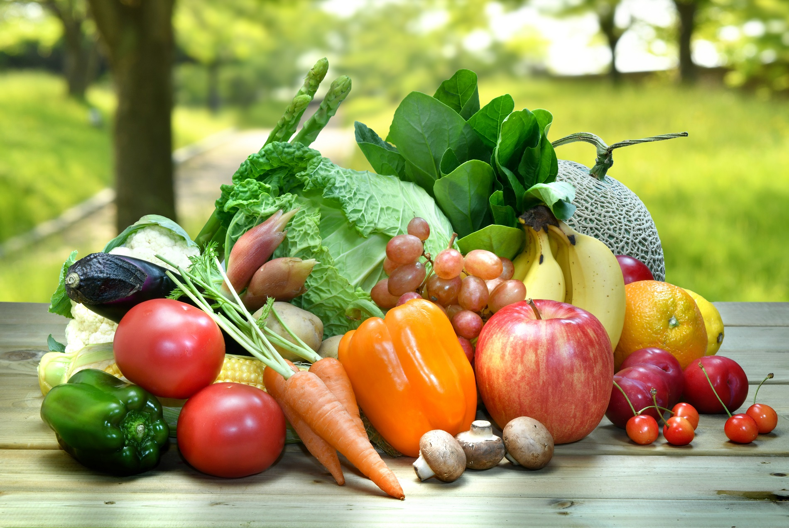
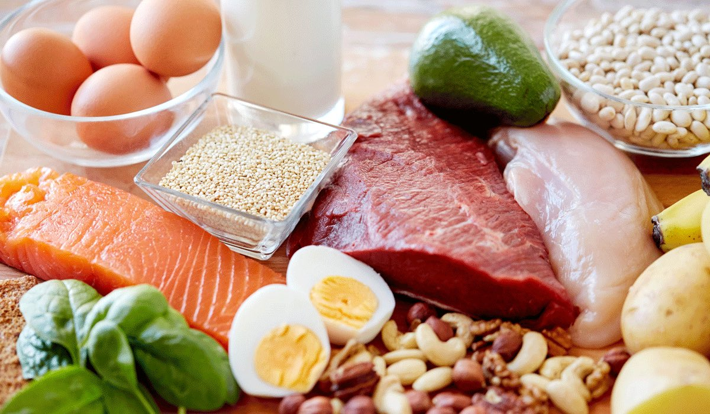
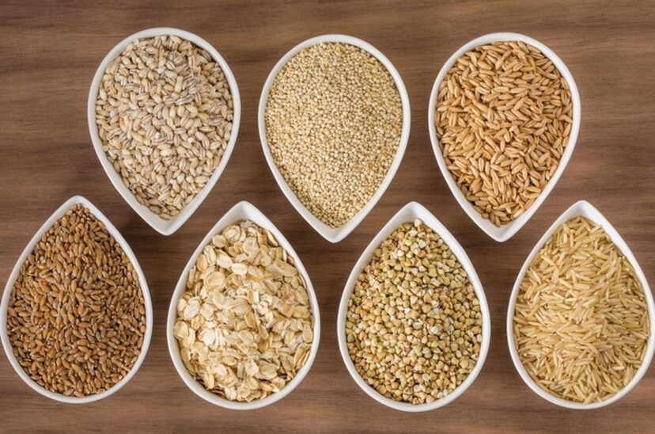
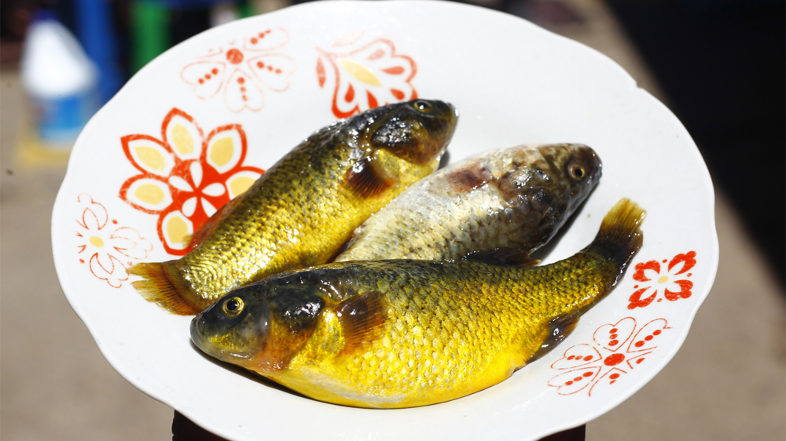
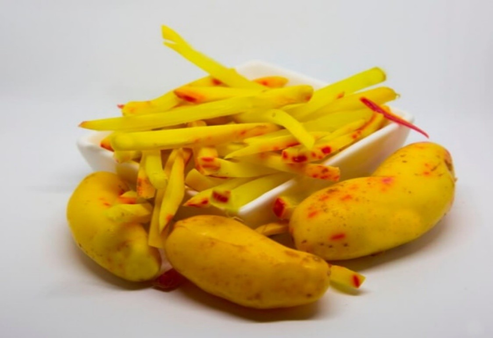

Frutas y Verduras
Consume una variedad de frutas y verduras de diferentes colores para obtener una amplia gama de nutrientes. Las frutas y verduras son ricas en vitaminas, minerales, antioxidantes y fibra, todos esenciales para mantener una buena salud. Incorporar frutas como la papaya, la tuna, el aguaymanto y el tumbo, y verduras como la espinaca, la col y la zanahoria, en tu dieta diaria, ayuda a fortalecer el sistema inmunológico, mejorar la digestión y prevenir enfermedades crónicas.
Proteínas Magras
Incluye proteínas magras en tu dieta, como pollo, pescado, legumbres y frutos secos. Las proteínas magras son fundamentales para el crecimiento y la reparación de los tejidos del cuerpo, además de ser esenciales para la producción de enzimas y hormonas. Optar por carnes magras, pescado fresco del lago Titicaca, y fuentes vegetales de proteína como las habas y los frijoles, puede ayudar a reducir el riesgo de enfermedades cardiovasculares y mantener un peso saludable.
Granos Enteros
Elige granos enteros en lugar de refinados, como arroz integral, quinoa, avena y pan integral. Los granos enteros son una excelente fuente de fibra dietética, que ayuda a regular el sistema digestivo y mantener niveles estables de azúcar en la sangre. Además, contienen más nutrientes, como vitaminas del grupo B, hierro, magnesio y selenio, en comparación con los granos refinados. Incorporar granos andinos como la quinua y la kañiwa en tus comidas no solo es saludable sino también delicioso.
Papa y Chuño

La papa es un alimento básico en la dieta puneña. Es una buena fuente de carbohidratos y puede ser consumida hervida, al horno, en puré o en guisos. El chuño, una papa deshidratada, es otra opción rica en nutrientes que se puede almacenar por largos periodos. Ambos son ricos en vitamina C, potasio y fibra, lo que ayuda a mantener la salud cardiovascular y la digestión. Además, la papa contiene antioxidantes que pueden prevenir enfermedades crónicas.
Pesca de Lago Titicaca
El lago Titicaca ofrece una variedad de pescados frescos, como la trucha y el carachi, que son fuentes importantes de proteínas y ácidos grasos omega-3. Estos nutrientes son esenciales para la salud del corazón y el cerebro. Consumir pescado regularmente puede ayudar a reducir la inflamación, mejorar la función cognitiva y disminuir el riesgo de enfermedades crónicas. Además, el pescado del Titicaca es una opción sostenible y accesible para las comunidades locales.
Olluco
El olluco es un tubérculo andino rico en fibra y vitamina C. Es excelente para preparar guisos, ensaladas y sopas. Este alimento es conocido por su bajo contenido calórico y alto contenido en antioxidantes, lo que lo convierte en una opción ideal para quienes buscan mantener una dieta equilibrada. La fibra del olluco ayuda a mejorar la digestión y mantener la saciedad, mientras que la vitamina C fortalece el sistema inmunológico y promueve una piel saludable.